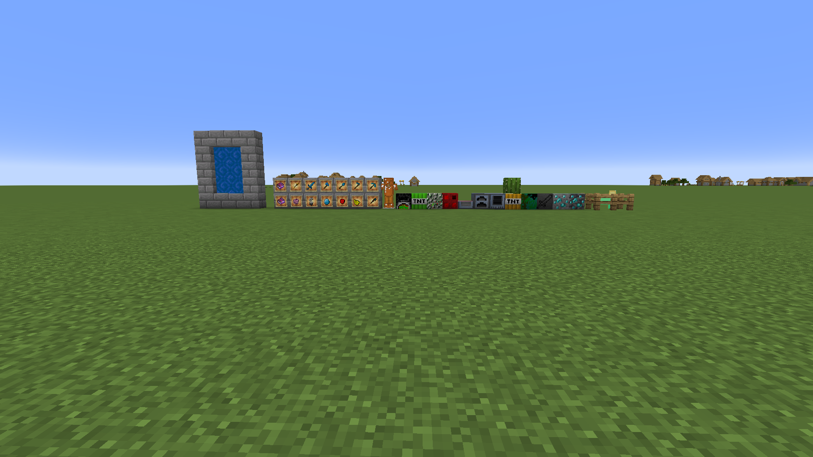

Java Mod
Understanding Minecraft Mod Registration: A Deep Dive into the Xzier Mod
Registration System Overview
In Minecraft modding, registration is a crucial process where we tell the game about new content. The Xzier Mod
uses Forge's DeferredRegister system, which provides a safe and organized way to register content.
Basic Registration Structure
public class ItemInit {
// Create a DeferredRegister for Items
public static final DeferredRegister<Item> ITEMS =
DeferredRegister.create(ForgeRegistries.ITEMS, TutorialMod.MODID);
// Register individual items using RegistryObject
public static final RegistryObject<Item> XZIER_GEM = ITEMS.register("xzier_gem",
() -> new Item(new Item.Properties().stacksTo(128)));
}
How Registration Works
- DeferredRegister Creation
- Each type of content (Items, B locks, Enchantments, etc.) gets its own DeferredRegister
- The DeferredRegister ensures content is registered at the correct time during game startup
- Event Bus Registration
public class TutorialMod { public TutorialMod() { IEventBus bus = FMLJavaModLoadingContext.get().getModEventBus(); ItemInit.ITEMS.register(bus); BlockInit.BLOCKS.register(bus); EnchantmentInit.ENCHANTMENTS.register(bus); // ... other registrations } }
Content Registration Examples
Block Registration
public class BlockInit {
// Create a DeferredRegister for Blocks
public static final DeferredRegister<Block> BLOCKS =
DeferredRegister.create(ForgeRegistries.BLOCKS, TutorialMod.MODID);
// Register individual blocks using RegistryObject
public static final RegistryObject<Block> XZIER_BLOCK = BLOCKS.register("xzier_block",
() -> new Block(Block.Properties.copy(Blocks.STONE)));
}
Enchantment Registration
public class EnchantmentInit {
// Create a DeferredRegister for Enchantments
public static final DeferredRegister<Enchantment> ENCHANTMENTS =
DeferredRegister.create(ForgeRegistries.ENCHANTMENTS, TutorialMod.MODID);
// Register individual enchantments using RegistryObject
public static final RegistryObject<Enchantment> XZIER_ENCHANTMENT = ENCHANTMENTS.register("xzier_enchantment",
() -> new Enchantment(new Enchantment.Rarity(Rarity.UNCOMMON),
new Enchantment.Type("all")));
}
Registration Logic and Considerations
Block Registration Logic
- Blocks often need both a Block and BlockItem registration
- Block properties define behavior (hardness, resistance, etc.)
- Complex blocks may need associated BlockEntities
Item Registration Logic
- Items can have special properties (stack size, durability)
- Custom items extend base Item class or specialized classes (SwordItem, etc.)
- Items may implement additional interfaces for special behavior
BlockEntity Registration
public class TileEntityInit {
public static final DeferredRegister<BlockEntityType<?>> TILE_ENTITIES =
DeferredRegister.create(BLOCK_ENTITY_TYPES, TutorialMod.MODID);
public static final RegistryObject<BlockEntityType<ProcessorBlockEntity>>
PROCESSOR_BLOCK_ENTITY = TILE_ENTITIES.register("processor_block",
() -> BlockEntityType.Builder.of(ProcessorBlockEntity::new,
PROCESSOR_BLOCK.get()).build(null));
}
Creative Tab Registration
public class ModCreativeTabsInit {
public static final DeferredRegister<CreativeModeTab> CREATIVE_MODE_TABS =
DeferredRegister.create(Registries.CREATIVE_MODE_TAB, TutorialMod.MODID);
public static final RegistryObject<CreativeModeTab> TUTORIAL_TAB =
CREATIVE_MODE_TABS.register("tutorial_tab",
() -> CreativeModeTab.builder()
.withTabsBefore(CreativeModeTabs.COMBAT)
.icon(() -> XZIER_GEM.get().getDefaultInstance())
.displayItems((parameters, output) -> {
output.accept(XZIER_GEM.get());
// Add other items...
}).build());
}
Organization
- Mod initialization classes (e.g., `ModInit`, `ModCreativeTabsInit`)
- Keep registrations organized by type
- Use helper methods for common registration patterns
- Maintain consistent naming conventions
Dependencies
- Consider registration order for interdependent content
- Use suppliers (Supplier<T>) to handle circular dependencies
Resource Management
- Ensure all registered content has corresponding resources (textures, models)
- Follow Minecraft's naming conventions for resources
Performance
- Use lazy initialization where appropriate
- Avoid heavy operations during registration
This registration system ensures that all mod content is properly initialized and integrated into the game, while maintaining compatibility with other mods and the base game. The structured approach makes the code maintainable and easy to extend with new content.